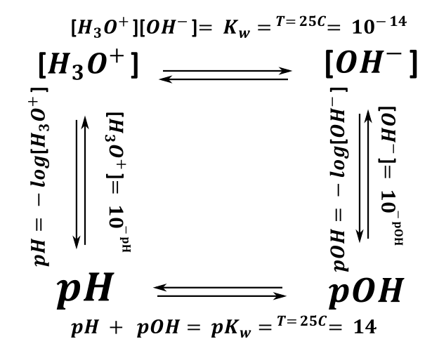

Z reakcji autodysocjacji wynikają zależności między stężeniem jonów \(\ H_{3}O^{+}\) i \(OH^{-}\) oraz dodatkowo to, że odczyn obojętny wody w temp. 25°C jest równy 7.
\[H_{2}O + H_{2}O \rightleftarrows OH^{-} + H_{3}O^{+}\]
W temperaturze 25C stałą autodysocjacji dla wody możemy zapisać jako:
\[10^{- 14} = K_{w}^{25C} = \left\lbrack H_{3}O^{+} \right\rbrack\left\lbrack OH^{-} \right\rbrack\]
W innej temperaturze wartość stałej jest inna, wodę natomiast zawsze pomijamy, bo jest rozpuszczalnikiem (tzn. stężenie wody w wodzie jest stałe)
TO JUŻ PRZEGINKA NA POZIOM MATURY, ALE JEST TU WYTŁUMACZENIE CO SIĘ DZIEJE Z STĘŻENIEM WODY (LUB DOWOLNEGO ROZPUSZCZALNIKA) W REAKCJI AUTODYSOCJACJI
Stał ogólna (termodynamiczna) tej reakcji to ma postać
\[H_{2}O + H_{2}O \rightleftarrows OH^{-} + H_{3}O^{+}\]
\[K_{reakcji} = \frac{\left\lbrack H_{3}O^{+} \right\rbrack\left\lbrack OH^{-} \right\rbrack}{\left\lbrack H_{2}O \right\rbrack^{2}}\]
Ale stęzęnie molowe wody w wodzie (czy w roztworze wodnym jest mniej więcej stałe)
Dla 1kg \(\ H_{2}O\) \(d = 1\frac{g}{cm^{3}}\)
\[\left\lbrack H_{2}O \right\rbrack = \frac{n}{V} = \frac{\frac{1000}{18}}{1dm^{3}} = 55.56\frac{mol}{dm^{3}}\]
\[K_{reakcji} = \frac{\left\lbrack H_{3}O^{+} \right\rbrack\left\lbrack OH^{-} \right\rbrack}{\left\lbrack H_{2}O \right\rbrack^{2}}\]
Dla uproszczenia rachunków
\[\left\lbrack \mathbf{H}_{\mathbf{3}}\mathbf{O}^{\mathbf{+}} \right\rbrack\left\lbrack \mathbf{O}\mathbf{H}^{\mathbf{-}} \right\rbrack = K_{reakcji}\left\lbrack H_{2}O \right\rbrack^{2} = \mathbf{K}_{\mathbf{W}}\]
Dla innych np. \(H_{2}SO_{4}\)
\[H_{2}SO_{4} + H_{2}SO_{4} \rightleftarrows H_{3}SO_{4}^{+} + \ HSO_{4}^{-}\]
Stała AUTODYSOCJACJI ( a nie do końca reakcji)
\[K_{auto} = \left\lbrack H_{3}SO_{4}^{+} \right\rbrack\lbrack\ HSO_{4}^{-}\rbrack\]
Więc dla uproszczenia rachunków po prostu pomija się w \(K_{A},\ K_{B},\ K_{so},\ K_{W}\) stężenie wody czy innego rozpuszczalnika (a w praktyce siedzi ono w stałej autodysocjacji czy innych stałych). SUMA SUMARUM NA POZIOM MATURY NAJLEPIEJ O WODZIE ZAPOMNIEĆ .
Ogólnie, jeżeli mamy ogólną stałą \(K\) (nieopisaną) to stężenie wody zapisujemy, czyli np. postać stałej reakcji estryfikacji:
\[K = \frac{\lbrack Ester\rbrack\left\lbrack H_{2}O \right\rbrack}{\lbrack Kwas\rbrack\lbrack Alkohol\rbrack}\]
Ale w przypadku roztworów wodnych wodę się pomija, więc K W jest zdefiniowana jest jako iloczyn stężeń produktów
\[H_{2}O + H_{2}O \rightleftarrows OH^{-} + H_{3}O^{+}\]
\[K_{W} = \left\lbrack H_{3}O^{+} \right\rbrack\left\lbrack OH^{-} \right\rbrack\]
Odczyn obojętny roztwór możemy zdefiniować, jako, w którym mamy tyle samo \(H_{3}O^{+}\) jonów, co \(OH^{-}\) więc ich stężenia też muszą być sobie równe, co możemy zapisać jako \(\left\lbrack H_{3}O^{+} \right\rbrack = \lbrack OH^{-}\rbrack\)
W temperaturze 25C
\[\left\lbrack H_{3}O^{+} \right\rbrack\left\lbrack OH^{-} \right\rbrack = 10^{- 14}\]
\[\left\lbrack H_{3}O^{+} \right\rbrack^{2} = 10^{- 14}\]
\[\left\lbrack H_{3}O^{+} \right\rbrack = 10^{- 7} = \lbrack OH^{-}\rbrack\]
W związku z czym w obojętnym roztworze stężenie jonów \(H_{3}O^{+}\) i \(OH^{-}\) muszą być równe 10 -7 .
W chemii roztworów zapis \(p\ \) czegoś definiujemy, jako ujemny logarytm z stężenia tego czegoś, ale również ze stałych:
\[p(czegos) = - \log_{10}{(czegos)}\]
Więc odpowiednio \(pH\) czy \(pOH\) możemy zdefiniować jako:
\[pH = - \log\left\lbrack H^{+} \right\rbrack\]
\[pOH = - \log\left\lbrack OH^{-} \right\rbrack\]
\[pCl = - \log\left\lbrack Cl^{-} \right\rbrack\]
\[pK_{so} = - \log K_{so}\]
Tylko dochodzimy do sprzeczności. Jakie \(H^{+}\) , Brønstead przed momentem mówił, że \(H^{+}\) nie istnieją.
Człowiek jest leniwy i nie lubi pisać za dużo. \(\lbrack H^{\mathbf{+}}\rbrack\) to uproszczona forma \(\lbrack H_{3}O^{+}\rbrack\) bardzo przydatna do zapisu w zadaniach obliczeniowych. Ale niepoprawna z punktu widzenia Brønsteada. Ale wygodna. Czyli stoimy jak ten kot.
O jonach \(H^{+}\) myślimy dokładnie w wodzie tak jak o jonach \(H_{3}O^{+}\) ,o ile oczywiście rozpuszczalnikiem jest woda, jakby był to roztwór \(H_{2}SO_{4}\ \) to mówilibyśmy o stężeniu protonowanego rozpuszczalnika, a więc \(H_{3}SO_{4}^{+}\) tzn. ze jest uproszczony, zapis, ale stężenia , mole i cała reszta generalnie się zgadzają i są tożsame.
Pozostaje pytanie gdzie stosujemy którą z form zapisu.
Jeżeli zadanie z Brønsteada musimy kategorycznie \(H_{3}O^{+}\)
Jeżeli obliczenia lub nie Brønsteada to możemy \(H^{+}\)
I jeżeli nie wiemy to musimy zawsze \(H_{3}O^{+}\) , bo może jest nieprzyjemne w zapisie, ale będzie na pewno poprawne.
\[pH = - \log\left\lbrack H^{+} \right\rbrack\]
I ustaliśmy, iż w 25 C wodzie obojętnej mamy \(\left\lbrack H_{3}O^{+} \right\rbrack = 10^{- 7}\)
Wniosek \(pH = - \log\left\lbrack H^{+} \right\rbrack = - \log\left\lbrack \ H_{3}O^{+} \right\rbrack = - \log_{10}10^{- 7} = 7\)
Natomiast pH obojętnej wody zależy od temperatury, gdyż zmiana temperatury powoduje zmianę wartości stałej równowagi (autodysocjacji też) i tym samym zmianę stężeń równowagowych. Rozważmy przykład: wodę (obojętną) zagotowano do temperatury 80°C , wiadomo, że w tej temperaturze wartość stałej równowagi autodysocjacji wynosi \(K_{w}^{80C} = 5·10^{- 13}\) Jakie będzie pH tej wody (obojętnej)?
TO NIE JEST 7. Bo zmienia się \(K_{w}^{80C}\) . Należy wykonać wszystkie obliczenia powyższe dla nowej temperatury i tym samym nowej wartości stałej równowagi.
\[\left\lbrack H_{3}O^{+} \right\rbrack\left\lbrack OH^{-} \right\rbrack = 5·10^{- 13}\]
\[\left\lbrack H_{3}O^{+} \right\rbrack = \left\lbrack OH^{-} \right\rbrack\]
\[\left\lbrack H_{3}O^{+} \right\rbrack^{2} = 5·10^{- 13}\]
\[\left\lbrack H_{3}O^{+} \right\rbrack = 0.707·10^{- 6}\]
\[pH = - \log\left\lbrack H_{3}O^{+} \right\rbrack = - \log{0.707·10^{- 6}} = \mathbf{5.849}\]
Wniosek: pH wody, która jest obojętna, zależy od temperatury.
Z zależności: \(\left\lbrack H_{3}O^{+} \right\rbrack\left\lbrack OH^{-} \right\rbrack = K_{w}\) możemy wyprowadzić bardzo ważne zależności między \(\mathbf{pH}\) i \(\mathbf{pOH}\)
\[\left\lbrack H_{3}O^{+} \right\rbrack\left\lbrack OH^{-} \right\rbrack = K_{w}\]
\[\log\left( \left\lbrack H_{3}O^{+} \right\rbrack\left\lbrack OH^{-} \right\rbrack \right) = \log K_{w}\]
\[\log\left\lbrack H_{3}O^{+} \right\rbrack + \log\left\lbrack OH^{-} \right\rbrack = \log K_{w}\]
\[- \log\left\lbrack H_{3}O^{+} \right\rbrack + - \log\left\lbrack OH^{-} \right\rbrack = - \log K_{w}\]
\[\mathbf{pH + pOH = p}\mathbf{K}_{\mathbf{w}}\]
\[pK_{w} =^{25C} = - \log 10^{- 14} = 14\]
W takim razie znając wartość jednego z pH , pOH , [H + ], [OH - ] możemy obliczyć jaka jest wartość pozostałych , oczywiście musimy posiadać K w , lub wiedzieć, że temperatura wynosi 25 O C.
\[- \log\left\lbrack OH^{-} \right\rbrack = pOH \rightarrow \log\left\lbrack OH^{-} \right\rbrack = - pOH\]
Z prawa działań na logarytmach wynika
\[\log_{a}b = c < = > b = a^{c}\]
\[pOH = \ - \log{\lbrack OH^{-}\rbrack}\]
Znając więc pOH możemy obliczyć stężenie jonów OH - wedle wzoru:
\[\log_{10}\left\lbrack OH^{-} \right\rbrack = - pOH \rightarrow \left\lbrack OH^{-} \right\rbrack = 10^{- pOH}\]
Przedstawione zależności można przedstawić na grafie:

Z uwagi na niedokładnie napisane treści zadań, jeżeli nie podadzą temperatury w zadaniach (i nie masz określenia ze w jakiejś temperaturze T) to spokojnie należy założyć, że temperatura jest równa 25C i wartość K W =10 -14 , ale znaczy tyle, że autor zadania był niedouczony.
Silne kwasy oraz silne zasady dysocjują całkowicie na jony. Warunkiem, że kwas jest silny jest to, że posiada on tzw. stałą dysocjacji kwasowej K a większą niż 1; natomiast zasada posiada stałą dysocjacji zasadowej K b również większą niż 1. Z zasad nieorganicznych należy wymienić wodorotlenki pierwszej grupy oraz Ba(OH) 2. Reszta wodorotlenków metali drugiej grupy drugiej jest średnio rozpuszczalna, co powoduje komplikacje w obliczeniach, jeżeli wodorotlenek taki ma stężenie, iż rozpuścił się w całości można uznać go za mocną zasadę (wyjątkiem jest Be(OH) 2 , który jest wodorotlenkiem amfoterycznym). Na potrzeby starej matury kwas siarkowy (VI) traktujemy (jeżeli nie podali inaczej) jako silny kwas dwuprotonowy tzn. dysocjuje całkowicie z odszczepieniem obu wodorów. Na potrzeby nowej matury może być różnie, ale również można go uznać za silny, szczególnie jeżeli jego stężenie molowe jest mniejsze niż 0.01 mol dm -3 .
Rozważmy przekład:
Do kolby wsypano 1g Ba(OH) 2 , zalano wodą do objętości = 250ml. Jakie jest pH??
Rozpatrujemy najpierw dysocację
\[Ba(OH)_{2} \rightarrow Ba^{2 +} + 2OH^{-}\]
\[n_{Ba(OH)_{2}} = \frac{1}{137 + 2·17} = 0.00585\]
\[V = 250ml = 250cm^{3} = 0.25dm^{3}\]
Obliczamy stężenie molowe rozpuszczonego Ba(OH) 2
\[\left\lbrack Ba(OH)_{2} \right\rbrack = \frac{n_{Ba(OH)_{2}}}{V} = \frac{0.00585}{0.25} = 0.0234\]
I stężenie molowe uzyskanych jonów OH -
\[\left( Ba(OH)_{2} \right) - \left( OH^{-} \right)\]
\[1 - 2\]
\[0.0234 - \lbrack OH^{-}\rbrack\]
\[\left\lbrack OH^{-} \right\rbrack = 2\left\lbrack Ba(OH)_{2} \right\rbrack = 0.0468\]
Możemy powiązać uzyskane stężenie jonów OH - z stężeniem jonów H +
\[\left\lbrack H^{+} \right\rbrack\left\lbrack OH^{-} \right\rbrack = 10^{- 14}\]
\[\left\lbrack H^{+} \right\rbrack = \frac{10^{- 14}}{0.0468} = 2.14·10^{- 13}\]
I logarytmując dostajemy wartość pH
\[pH = - \log{\left\lbrack 2.14·10^{- 13} \right\rbrack = 12.67}\]
Ile gramów stałego \(NaOH\) należy użyć do przygotowania 5 dm^3 roztworu o pH =11?
\[NaOH \rightarrow Na^{+} + OH^{-}\]
\[pH = - \log_{10}\left\lbrack H^{+} \right\rbrack = 11\]
\[\left\lbrack H^{+} \right\rbrack = 10^{- 11} = 10^{- 11}\]
\[\left\lbrack H^{+} \right\rbrack\left\lbrack OH^{-} \right\rbrack = 10^{- 14}\]
\[10^{- 11}·\left\lbrack OH^{-} \right\rbrack = 10^{- 14}\]
\[\left\lbrack OH^{-} \right\rbrack = \frac{10^{- 14}}{10^{- 11}} = 10^{- 3} = \lbrack NaOH\rbrack\]
Oblicz jaką objętość gazowego HCl (warunki normalnych) musisz zaabsorbować w 250ml H 2 O aby \(pOH\) tegoż roztworu wynosiło 13.2. I tutaj załóż że objętość roztworu wodnego się nie zmienia. T=25C
\[- \log{\left\lbrack OH^{-} \right\rbrack = 13.2}\]
\[\left\lbrack OH^{-} \right\rbrack = 10^{- pOH} = 10^{- 13.2} = 6.3·10^{- 14}\]
\[\left\lbrack H^{+} \right\rbrack\left\lbrack OH^{-} \right\rbrack = 10^{- 14}\]
\[\left\lbrack H^{+} \right\rbrack = \frac{10^{- 14}}{6.3·10^{- 14}} = 0.159\]
\[HCl \rightarrow H^{+} + Cl^{-}\]
\[n_{H^{+}} = cV = 0.0398 = n_{HCl}\]
\[V_{HCl} = n_{HCl}·V_{mol} = 0.0398·22.4 = 0.892\]